承载网 / OLT 维护笔记
发布说明：本页为公开站点，文中所有系统登录口令已替换为
<密码已隐藏>。完整口令保存在本地原始文档中，不随本页发布。本文档由原《笔记831.docm》整理合并而成。整理时做了三件事： 1. 重排章节：原文编号混乱（一、二、四、五、八与 1/2/3/5/6/7 混用，"三"缺失），现统一为一～九章，节号连续； 2. 修正错漏：统一了错别字与命令拼写（
dispaly→display、"魔板"→"模板"、"案列"→"案例"、"comit"→commit、"sw vlan"→switchport vlan等），并把原文档里只有截图、没有文字的步骤补成了可读的操作说明； 3. 归位插图：原文共 204 张内嵌图，其中 2 组是同一截图的重复拷贝，去重后 202 张全部保留，按内容就近插入，图注说明该图在看什么。
目录
- 第一章 BAS（宽带接入服务器）
- 第二章 IDC 设备（CE16808 / 中兴 9908）
- 第三章 互联网专线
- 第四章 OLT
- 第五章 号线系统
- 第六章 账号与网站汇总
- 第七章 Python / Pandas 速查
- 第八章 IP 备案
- 第九章 实际配置案例
- 附录：常用命令速查
第一章 BAS（宽带接入服务器）
1.1 查询 OLT 的内外标范围
前提：已经拿到 OLT 的 IP，需要确认它挂在哪台 BAS 上、走哪个子接口。
登录方式：目前（HW 期间）只能以 VPN + SSH 方式登录。正常期间可用 V5 VPN，在 3A 管理里直接进入。
登录后查路由，定位 OLT 挂在哪个接口：
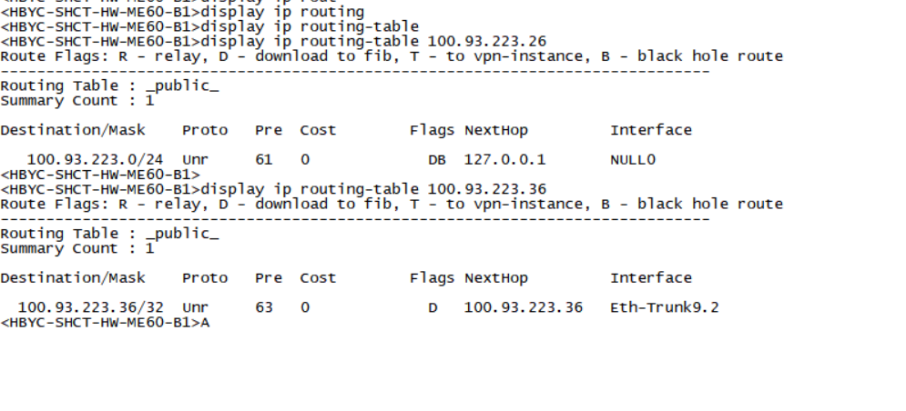
找到 OLT 对应的 Eth-Trunk 口后，先整体看一遍端口描述：
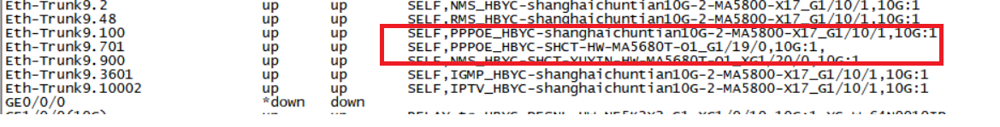
找到 PPOE（自动拨号）那一行的子接口，进去看配置：
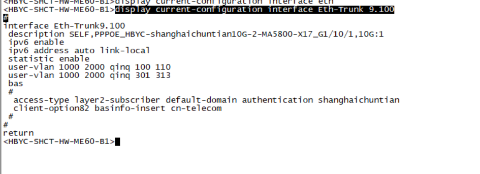
判读规则：
qinq后面是外标范围；- 上面
user-vlan是内标范围； - 示例图中：内标范围
1000-2000，外标范围100-110、301-313。
需要看物理口时：
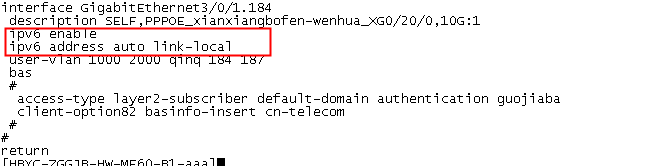
1.2 确定 OLT 的 IP
- 先在私网地址规划表中挑选一个未使用的 IP；
- 进入 BAS，注意提示符：
< >是用户模式，[ ]是管理模式，只有管理模式才能做数据配置：
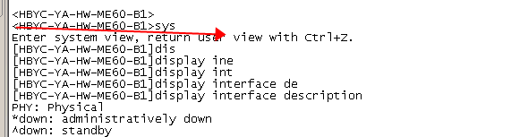
- 配置前再核对一次接口描述，避免配错口：
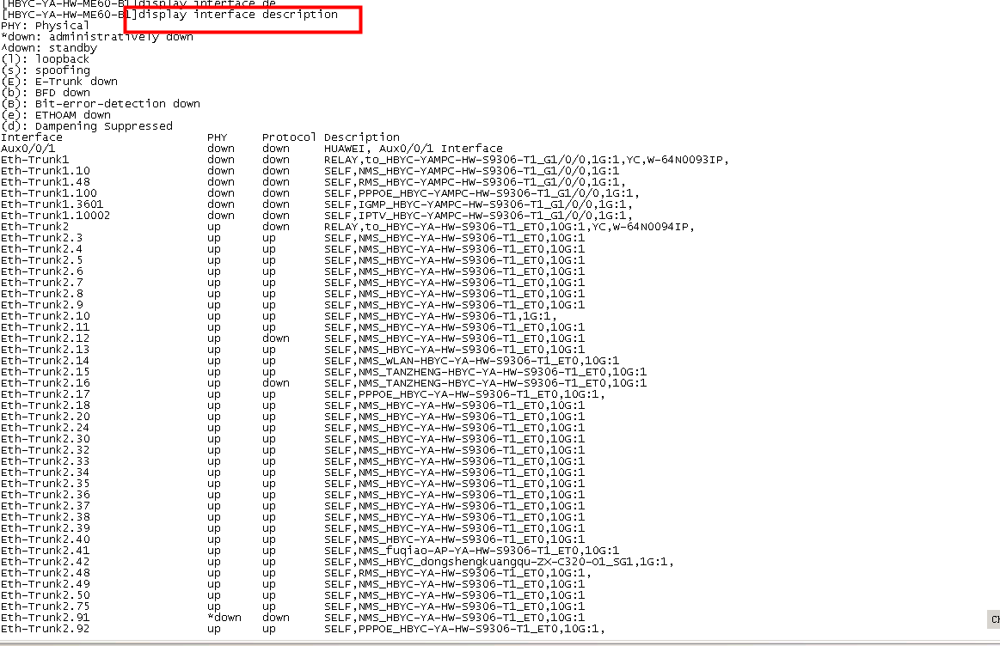
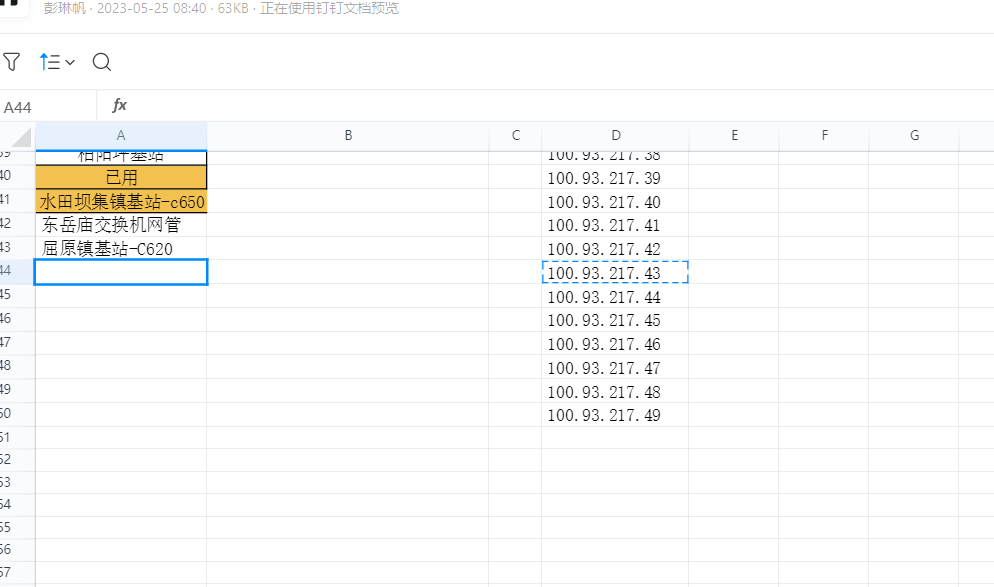
1.3 检查有没有 nms-mer 接口
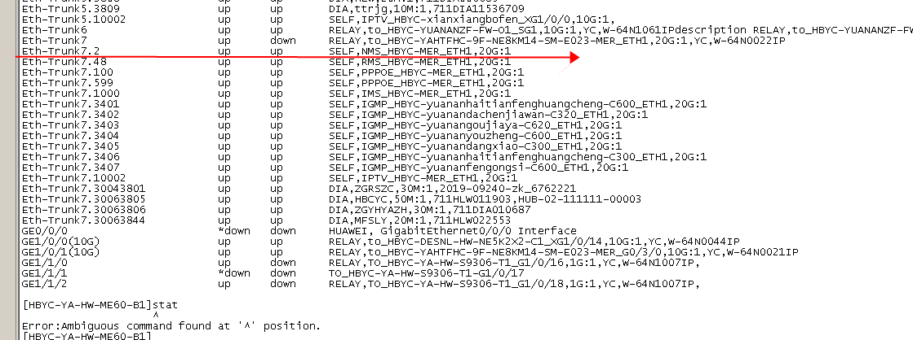
找到可疑的子接口后，确认它下面有没有数据：
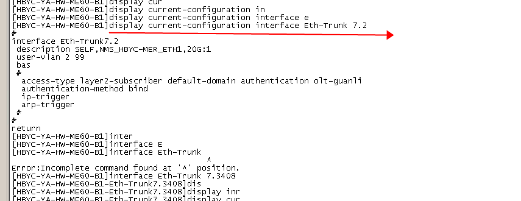
示例配置形态：
如果该子接口已经规划了网管 vlan 范围，就可以直接在这上面绑定网管静态 IP（见 1.8）。
1.4 BAS 设备信息与上联板对应关系
板卡识别：中兴主控板为 SMXA，业务板为 GTGH；板卡型号中带 X 或 B 的是万兆板卡。
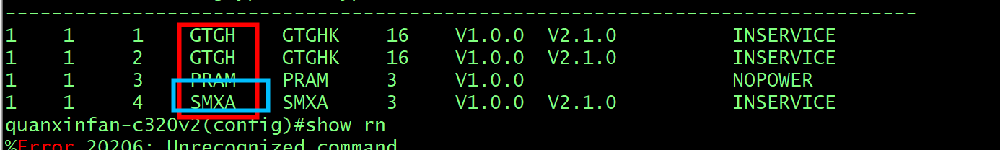
OLT 上联板与 OLT 型号的对应关系（查外标时用）：
| OLT 型号 | 上联板端口 |
|---|---|
| C620 | XG1/4/1、XG1/5/1 |
| C650 | XG1/5/1、XG1/6/1 |
| 5800x17 | XG1/8/1、XG1/9/1 |
| 5800x15 | XG1/9/1、XG1/10/1 |
| C320 | XG1/3/1、XG1/4/1 |
| C300 | XG1/19/1、XG1/20/1 |
外标数量：针对大型 OLT 板卡 —— 5800x17、5800x15、C650、C300、C600，一台设备有 2 个外标；其他设备只有 1 个外标（宽带 vlan 依次增加，IPTV 同理）。
1.5 六种下挂业务与 BAS 上的简写
一个 OLT 下挂的业务就是这 6 类，BAS 上每个业务一个子接口，靠内外标区分。先记住业务与简写的对应关系，后面看配置才看得懂：
OLT 下挂的 6 种业务：
| 业务 | 说明 |
|---|---|
| IPTV | 电视 |
| 宽带 | PPPoE 上网 |
| 语音 | 固定电话 |
| 组播 | IGMP |
| 网管 | 设备纳管 |
| 互联网专线 | DIA |
BAS 配置里出现的简写：
| 简写 | 含义 |
|---|---|
IGMP |
组播 |
NMS |
网管 |
RMS |
宽带纳管平台 |
IMS |
有线固话（语音） |
PPOE |
自动上网（拨号宽带） |
DIA |
互联网专线 |
1.6 写入错误排查
配错了先看这个 IP 到底被写在什么地方：
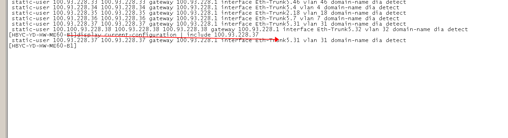
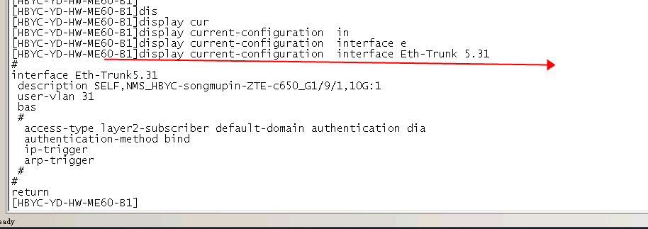
确认是误写（IP 实际未被占用）后，撤回静态 IP 绑定：
如果条目是给网管用的（domain-name olt-guanli），撤回后网管会立刻掉线，改完要重新绑回。
1.7 没有 nms-mer 端口时，如何写网管 vlan
四步：看规划的子接口 → 看规划的网管 vlan → 进网管接口手工写 vlan → 按图配置。
- 先看之前规划的子接口：
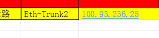
- 再看规划的网管 vlan：
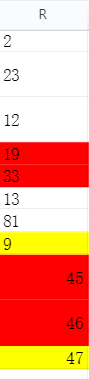
- 进入对应的网管接口，手工写入网管 vlan：
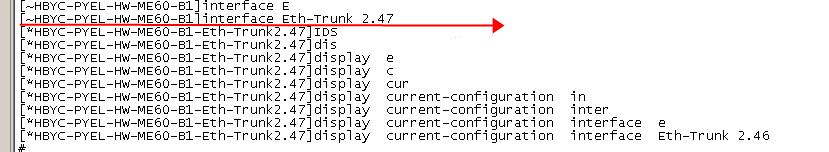
- 按此图形态配置：
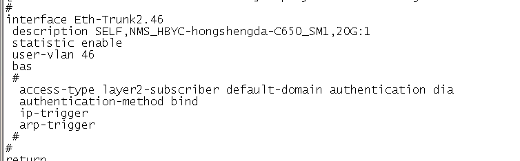
interface Eth-Trunk xxx
description SELF,NMS_HBYC-xxxxxx(基站名称)_SM1,20G:1
statistic enable
user-vlan xxx
回到 BAS，若出现错误提示，先敲 commit 提交，再进 BAS 敲下面的命令：
access-type layer2-subscriber default-domain authentication dia
authentication-method bind
ip-trigger
arp-trigger
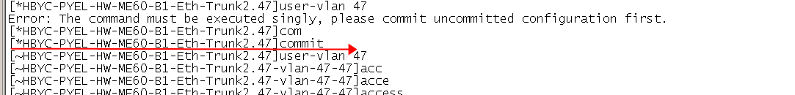
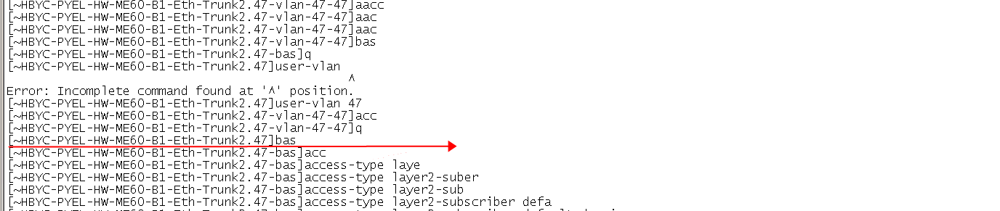
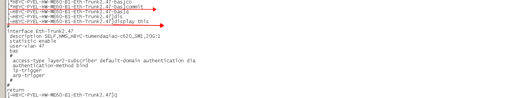
commit 确认后，用 display this 检查数据是否正常（对照上图第 4 步的形态）。
1.8 绑定 / 删除网管静态 IP
绑定（注意 gateway 一般取网段的 .1）：
static-user <起始IP> <终止IP> gateway <网关> interface Eth-Trunk xxxx(mer接口) \
vlan xxxx(网管vlan) domain-name olt-guanli detect
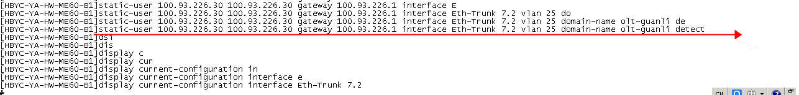
删除绑定时报"IP 已在线"，说明用户还挂着，先进 aaa 视图把在线用户踢掉：
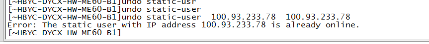
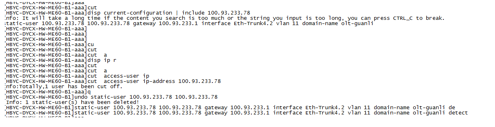
1.9 添加组播 vlan
interface Eth-Trunk x.xxxx # 进入子接口
vlan-type dot1q xxxx # 组播 vlan
description SELF,IGMP_HBYC-xxxxx(基站名称)-xxxx(设备型号)_ETH1,20G:1
ip address xxxx(组播IP) 255.255.255.252
pim sm
igmp enable
ip urpf loose
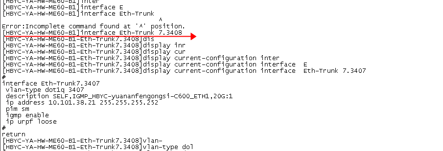
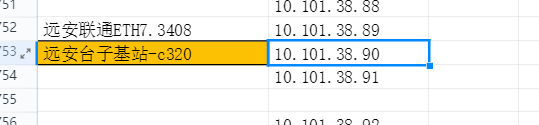
保存：
1.10 各业务子接口与内标/外标的对应关系
同一台 BAS 上，不同业务用子接口后缀区分，务必按后缀认业务：
| 子接口 | 业务 | 说明 |
|---|---|---|
.100 |
IPv6 | 双栈宽带上行 |
.48 |
RMS 纳管 | 宽带纳管平台 |
.10002 |
IPTV | 电视业务 |
.1000 |
IMS | 有线固话（语音） |
.2 |
NMS/MER | 网管 |
逐个检查有没有数据：
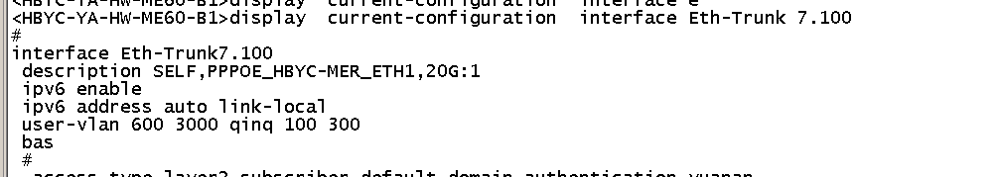
IPv6（.100）：
interface Eth-Trunk7.100
description SELF,PPPOE_HBYC-MER_ETH1,20G:1
ipv6 enable
ipv6 address auto link-local
user-vlan 600 3000 qinq 100 300
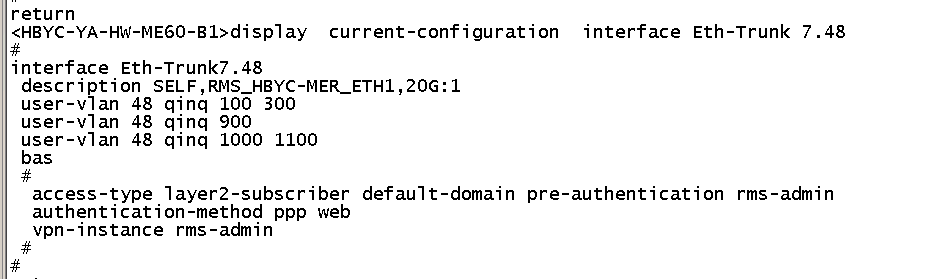
RMS 纳管（.48）：
interface Eth-Trunk7.48
description SELF,RMS_HBYC-MER_ETH1,20G:1
user-vlan 48 qinq 100 300
user-vlan 48 qinq 900
user-vlan 48 qinq 1000 1100
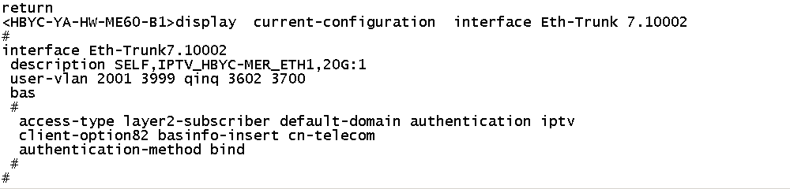
IPTV（.10002）：
interface Eth-Trunk7.10002
description SELF,IPTV_HBYC-MER_ETH1,20G:1
user-vlan 2001 3999 qinq 3602 3700
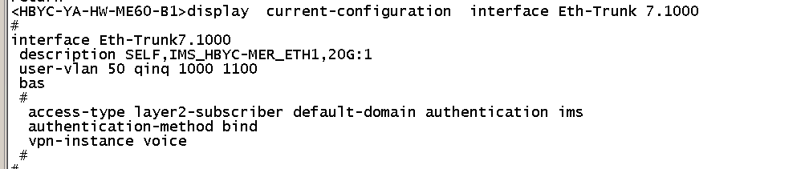
语音（.1000）：
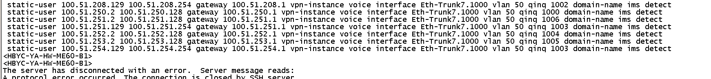
1.11 绑定语音 IP
static-user <起始IP> <终止IP> gateway <网关> vpn-instance voice \
interface Eth-Trunk xxxx(语音vlan) vlan 50 qinq <语音外标> domain-name ims detect
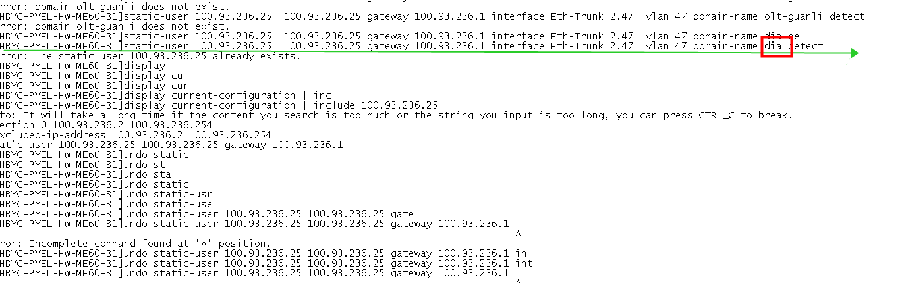
异常处理：若提示"静态地址被占用"：
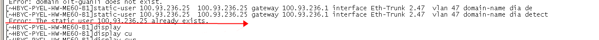
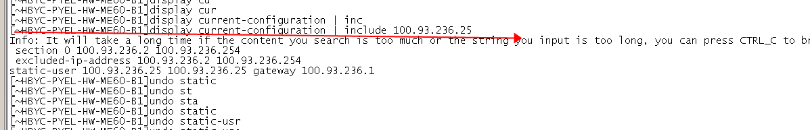
确认只是输入错误、并未真正占用时，直接删掉：
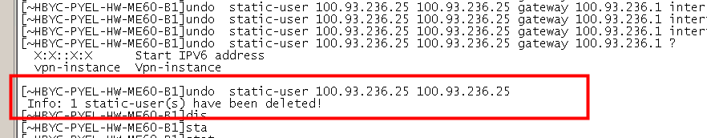
查看 e 口（Eth-Trunk 逻辑口）对应哪个物理接口：
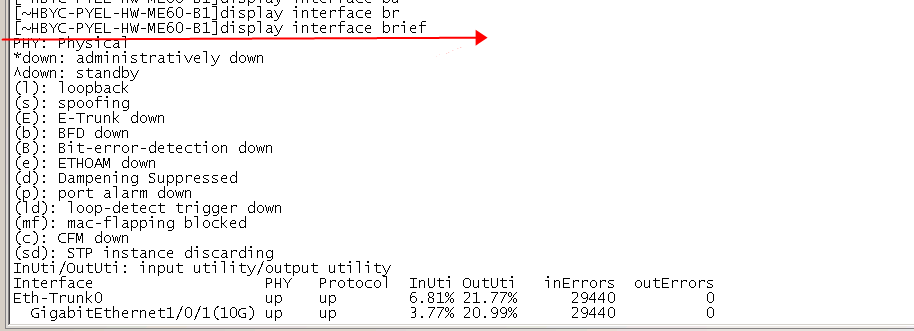
1.12 解绑 / 重绑语音 IP（完整流程）
- 先找该 OLT 归属的 BAS，确认绑定关系：
- 确认没绑过（用群里的地址规划表核对）：
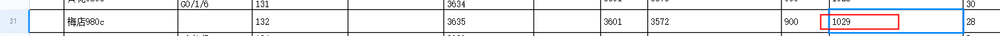
- 解绑：先关语音子接口，再删原绑定：
- 重新绑定：
static-user 100.51.180.221 100.51.180.240 gateway 100.51.180.1 vpn-instance voice \
interface Eth-Trunk4.1000 vlan 50 qinq 1020 domain-name ims detect
1.13 分配 ONU 的 IP
以给 100.93.236.18（夷陵区下坪 C620）分配一个 ONU IP 为例。
先看这个 IP 走哪个子接口：
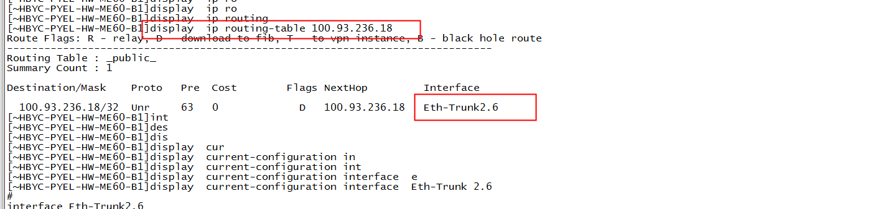
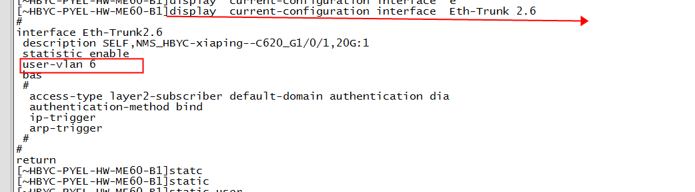
再在私网地址规划表里找未用 IP，填上"已用"：
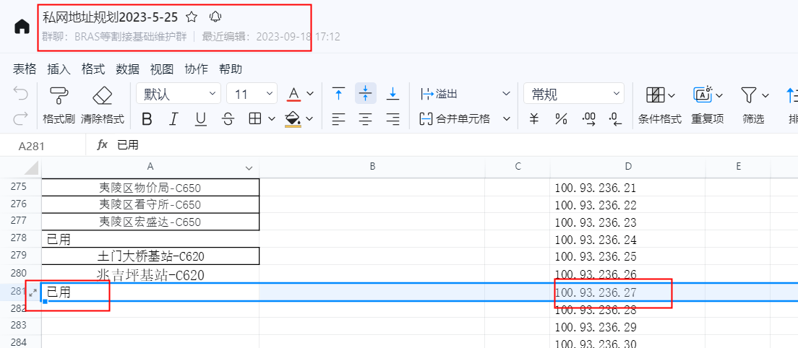
绑定静态地址：
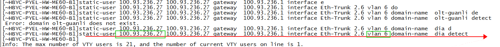
1.14 查看接口流量
专线流量：先看接口描述找专线口（描述里带 DIA 的为专线），直接进接口看数据大小：
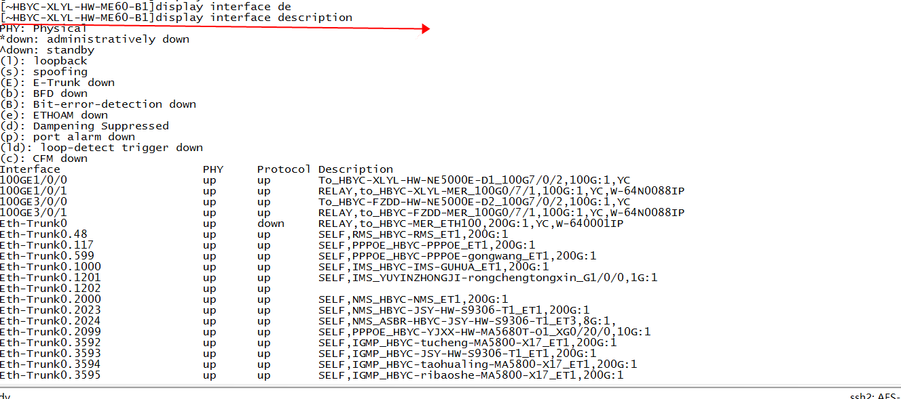
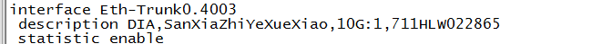
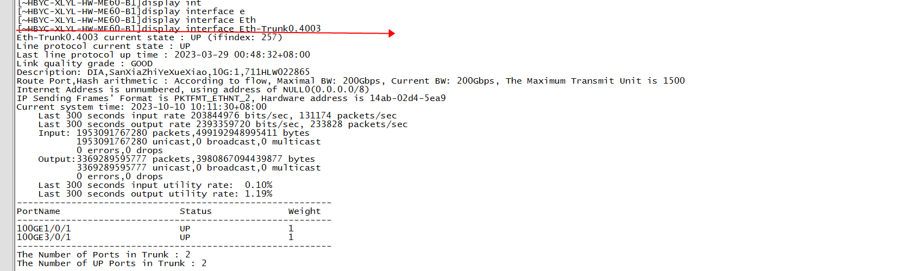
判读：output 是下载（下行），input 是上传（上行）。
1.15 查看使用用户数（在线数）
先看对应的拨号 vlan：
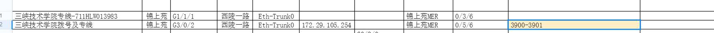
再看子接口里哪条是 ppoe：
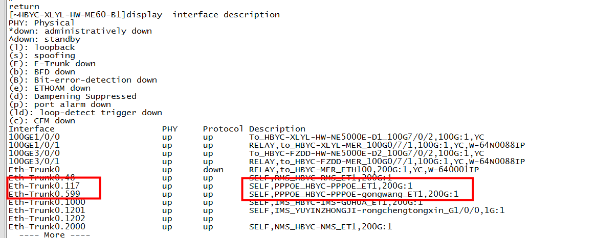
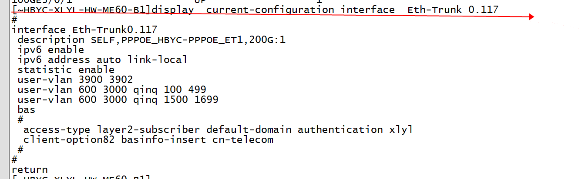
确认是此子接口后，统计在线用户：
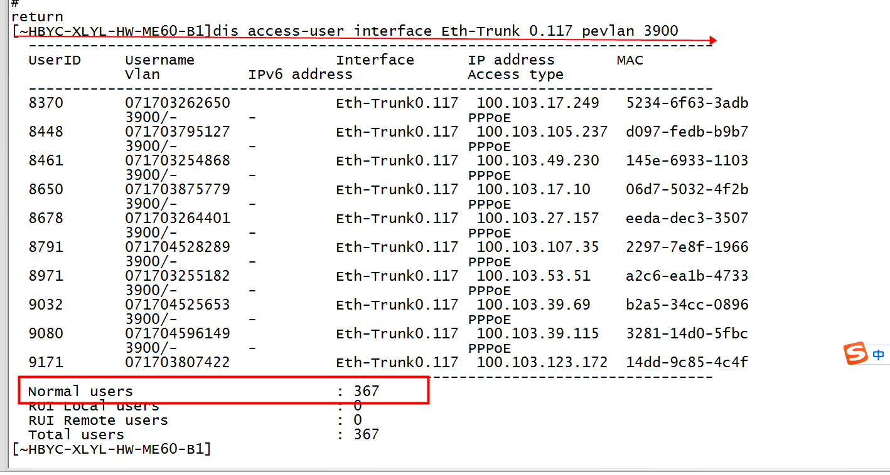
1.16 改变内标范围（内标错误检查）
- 先看外标的数据做了没有：
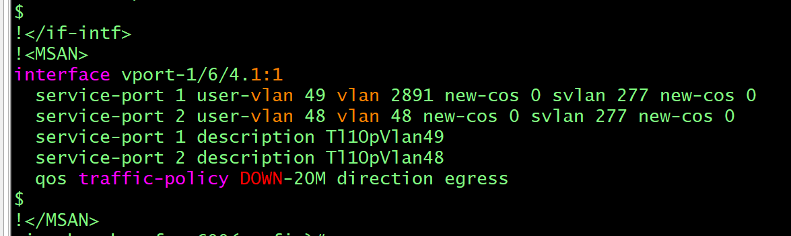
- 若有别的 PON 口占用，回去检查 BAS 上的内外标范围：
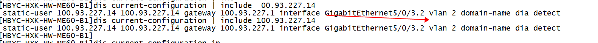
- 找到对应子接口，看是不是 PPOE 口：
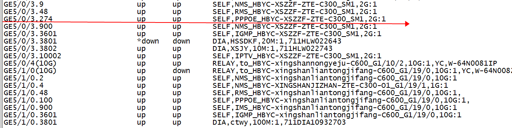
- 若找不到 ppoe 子接口，可直接试写指令，看错误提示反推：
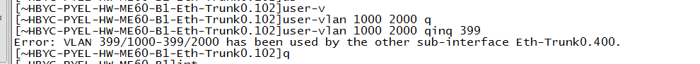
- 若发现 BAS 上的内标范围不够（超范围），手动补一段：
1.17 上联 950B 的 OLT 数据制作（IPRAN）
这类 OLT 不是直连 BAS，而是经 9306（IPRAN）上联。
- 先确定对应 BAS，再找到对接的 9306；
- 去 9306 上看子接口：
- 发现子接口后回 BAS，此子接口应与 BAS 一一对应；
- 看 BAS 上对应 Eth 口的
.48子接口（网管/RMS）：
- 确定未使用的外标（如 127-129 可用未新增），添加：
- 再做 ppoe 子接口（宽带）：
interface Eth-Trunk0.112
description SELF,PPPOE_HBYC-YL-HW-S9306-T1_ET1,20G:1,
ipv6 enable
ipv6 address auto link-local
statistic enable
user-vlan 1000 2000 qinq 112 115
pppoe-server bind Virtual-Template 1
- 再去做网管：
- 再去绑定静态 IP：
注意：走 950B 可以不用写组播。
VLAN 穿透：去 93 上把 vlan 穿透，传到 BAS 的同时，也要保证到 CX600 的 vlan 穿透，传输侧同样要是对应端口。
最后确认 vlan 起来了没有：
没起来就去 9306 上敲：
1.18 上联是县乡波分的情况
现象（2024/1/14）：走县乡波分、宽带 vlan 时，ONU 获取不到宽带地址。
- 设备确实走的县乡波分；
- 宽带子接口也做了：
- 但
.48RMS 管理口里没数据：
处理：补一条
若修改后仍不通，注意中间还穿了一台 7800 交换机（两河）。
1.19 新加地址池
先看全局配置，找到对应名称的地址池（domain xxxx）：
把需要添加的 IP 段加进去：
ip pool dia55 bas local
gateway 122.190.251.97 255.255.255.240
section 0 122.190.251.98 122.190.251.110
excluded-ip-address 122.190.251.98 122.190.251.110
dns-server 218.106.127.122 218.104.111.122
再进 AAA 域把地址池挂上：
aaa
domain ims
authentication-scheme none
accounting-scheme none
ip-pool ims
ip-pool ims1
ip-pool ims2
语音地址池还要带 vpn：
1.20 查询 MAC 地址
用户报障时手里通常只有 MAC 或账号，先在 BAS 上按 MAC 找到人，再顺着端口往下查：
| 场景 | 命令 |
|---|---|
| 所有在线用户 | display access-user |
| 专线用户（domain dia） | display access-user domain dia |
| 按 MAC 查用户信息 | display access-user mac-address 3485-112a-315c |
| 查某端口下有没有用户 | display access-user interface Eth-Trunk5.599 |
| 查接口全部 MAC 表（9306） | display mac-address dynamic GigabitEthernet 1/0/19 |
1.21 其他问题
日常遇到的两类零散问题：网关地址要换、静态用户绑定条目太多想简化。
网关在子接口上，如何修改地址池
- 先关闭端口；
- 删除原有
ip address：
- 再按新地址正常添加。
使用 interface-list 简化绑定
查看对应的 list：
用 list 绑定：
第二章 IDC 设备（CE16808、中兴 9908）
2.1 IP 分配配置
- 先看端口：
- 找到对应的 vlan，确认是不是客户名称；
- 再看 vlanif：
- 绑定静态 IP 路由：
- 开启 IPv4 出口允许：
双机必做：记得再去另一台 16808 设备上开启同一条命令。
2.2 关闭端口
先进口子，再 shutdown：
退出后如何确认确实关了？看接口状态：
2.3 查看丢包与出口流量
判断 IDC 设备出口是否拥塞、链路是否健康，先看 ISIS 邻居状态，再看接口 CRC：
看 CRC 错误计数判断物理链路质量：
2.4 修改带宽
📌 原文此节只有标题、没有正文。IDC 侧的带宽调整同样通过 QoS 模板实现，具体参数写法参见 3.7 修改专线带宽 与 3.9 带宽模板。
2.5 中兴 9908
第三章 互联网专线
3.1 确定 BAS 设备
方法 A：NE5000 查询（推荐）
在 BAS 的上联设备 NE5000 上敲：
查到对应接口后，再看接口信息：
方法 B：经验判断
OLT 所在区域的 BAS 数量是固定的，一般都是就近接入。但建议用 NE5000 查询，最为准确。
3.2 在 BAS 上找到对应的子接口
在 BAS 上看它怎么联到 OLT。几种可能：
情况一：子接口对应智网
先去找最近的割接资料里的外标信息：
先确定外标：
再确定内标（方式是找未使用的）。子接口如果是专用的网管 vlan：
看子接口使用情况：专线是 3800-4000 的范围，据此确定未使用的内标：
再进入在用的子接口，找到可用的外标：
情况二：接 9306 的设备
先找到 93 对应的 BAS，再去对应的口子下穿透 vlan：
在 BAS 上先确定子接口（以 4008 子接口为例）：
配置专线子接口数据：
再去 93 上找到对应的子接口，穿透 vlan：
配置如下：
interface GigabitEthernet x/x/x
description DIA,xxxxx:1,xxxxx
port link-type access
port default vlan xxxx
3.3 配置专线子接口
interface Eth-Trunk x.xxxx
description DIA,xxxx(专线名称),xxM(带宽):1,xxx(专线号码)
qos-profile xxM inbound identifier none
qos-profile xxM outbound identifier none
user-vlan xxx(内标) qinq xxx(外标)
bas
#
access-type layer2-subscriber default-domain authentication dia
authentication-method bind
ip-trigger
arp-trigger
3.4 绑定静态 IP
static-user dia,xxxx,xxm(接口描述):1,xxxx(专线号码) <起始IP> <终止IP> \
gateway <网关> interface Eth-Trunkx.xx vlan xxxx qinq xxx domain-name dia detect
3.5 查询绑定 IP 情况
3.6 针对 IPv6 绑定
interface Eth-Trunk5.30483806
description DIA,sxdgl,70M:1,711DIA14313086
ipv6 enable
ipv6 address auto link-local
qos-profile 70M inbound identifier none
qos-profile 70M outbound identifier none
user-vlan 3806 qinq 3048
bas
#
access-type layer2-subscriber default-domain authentication dia
authentication-method bind
authentication-method-ipv6 bind
ip-trigger
arp-trigger
ipv6-trigger
nd-trigger
3.7 修改专线带宽
- 先把原始数据整段复制下来备份；
- 关掉端口（顺序很重要：先 shutdown，否则改不动 qos）：
interface xxx
shutdown
undo qos-profile inbound
undo qos-profile outbound
description DIA,jysc,100M:1,711DIA13835884
qos-profile 200M inbound identifier none
qos-profile 200M outbound identifier none
commit
display this # 核对
undo shutdown
3.8 删除子接口
前提：保证 IP 已解绑、端口已关闭。
3.9 带宽模板
qos-profile 200M
car cir 204800 cbs 1870000 green pass red discard inbound
car cir 204800 cbs 1870000 green pass red discard outbound
204800= 200 × 1024（单位 kbps）。
第四章 OLT
4.1 登录方式与基础概念
登录方式：SecureCRT、Telnet、网管。
Telnet 快速登录：选择"快速链接"，协议选 Telnet，输入 IP 即可。
账号：
| 厂商 | 用户名 | 密码 |
|---|---|---|
| 中兴 | zte |
<密码已隐藏> |
| 华为 | huawei |
<密码已隐藏> |
注意：连续输错 3 次会进入锁定状态，无法登录。
OLT 数据的四个要点（看懂工单的前提）：
| 概念 | 说明 |
|---|---|
| LOID / SN | ONU 信息的索引，OLT 据此下发数据到对应 ONU |
| OLT 的 IP | OLT 的标识，可据此通过 telnet 远程访问 |
| PON 口 | 对应具体的物理接口 |
| 外层 VLAN（外标） | BAS 到 OLT 与传输之间的通道（描述不准确，大致这样理解） |
| 内层 VLAN（内标） | OLT 内区分相同外标的设备的标识 |
华为 5800 / 5680T
查看端口下已注册设备及配置：
可以查看 0/3/4 这个 PON 口下全部 ONU 信息，通过显示的 LOID 或宽带账号找到对应的 ONT 编号。
查看 ONU 配置：
查看未注册 ONU：
查看 ONU 数据信息（通过 LOID/SN 查 ONT 信息）：
知道编号后：
即可看具体数据。
中兴 C620 / C320
查看 ONU 状态：
查看 ONU 数据配置：
查看端口下已注册设备信息：
通过 SN / LOID 查询：
LLDP（找上联口，两种方式）：
4.2 宽带上行模板（DBA）修改
现象：宽带测速上不去、上行不够，需要提高 ONU 的保证带宽/最大带宽。
第 1 步：查看现状
下拉找到对应的线路信息，关键词 ont-lineprofile：
上拉，在配置详情里找到 DBA 模板相关信息，看看上行的极限：
参数含义：
assure：保证带宽，至少满足的带宽值；max：最大带宽值。
第 2 步：修改或新建 DBA 模板
修改已有 DBA 模板：
新建 DBA 模板（保证 10M、最大 30M）：
第 3 步：新建线路模板并改 DBA 引用
关键原则：不要直接改在用的线路模板。先复制一份对应的模板，只改 DBA 引用，这样不会影响在用用户。
先找到 ONU 的线路模板信息：
新建模板（黄色部分要不重复，蓝色为名称）：
ont-lineprofile gpon profile-id 20 profile-name "ceshi"
omcc encrypt off
tcont 1 dba-profile-id 8 # 关键修改项：指向新的 DBA 模板
gem add 1 eth tcont 1 encrypt off
gem add 2 eth tcont 1 encrypt off
gem add 3 eth tcont 1 encrypt off
gem mapping 1 1 vlan 2000
gem mapping 2 2 vlan 12
gem mapping 3 1 vlan 3807
gem mapping 3 3 vlan 3
gem mapping 3 4 vlan 3815
commit
quit
以上语句都需要有空格才能写入。
第 4 步：把 ONU 挂到新模板上
进对应的 PON 口设置：
4.3 新建线路模板（中兴）
查看线路模板：
4.4 故障处理流程
报障先分业务类型，不同业务查的点完全不同：宽带看在线状态和 vlan，语音看 service-port。按下面的顺序排，能最快定位到是线路、光路还是数据问题。
4.4.1 宽带不通
第 1 步：查 LOID 是否在线
指令能看到 PON 口下设备的在线信息。如果不在线，联系现场师傅重启设备。
第 2 步：在线后进设备配置界面，检查是不是外标 vlan 问题
查 vlan 对应的 mac 是否存在。
4.4.2 固话（语音）不通
如果是已在使用的语音不通，先查 ONU 状态，然后确认这行数据存在：
常见原因：svlan 对不上 IMS 业务的外标。
需要修改该项：
interface gpon-onu_1/16/12:14
no service-port 5
service-port 5 vport 1 user-vlan 50 vlan 50 new-cos 5 svlan 900
service-port 5 description Tl1OpVlan50
第 3 步：ping 核心网验证
固话测试 IP（核心网软交换服务器，ping 通说明语音数据能送达核心网，接入层就没问题了）：
只要 ping 3 次都正常，就可以去找交换侧排查。
4.5 修改 ONU 数据（中兴 C 系）
找未注册设备：
绑定 vlan、网口：找到对应的 PON 口，进入 ONU 管理模式（以公司的 ONU 为例）：
pon-onu-mng gpon-onu_1/1/3:45
server 1 gemport 1 vlan 3000
server 2 gemport 1 vlan 1350
vlan port eth_0/1 mode tag 1350
特殊拨号上网的数据制作（vlan 599）
手动做数据，形态是把内标 49/48 映射到 vlan 599，共用一个外标 svlan 543：
interface vport-1/1/14.6:1
service-port 1 user-vlan 49 vlan 599 new-cos 0 svlan 543 new-cos 0
service-port 2 user-vlan 48 vlan 48 new-cos 0 svlan 543 new-cos 0
service-port 2 description Tl1OpVlan48
qos traffic-policy DOWN-20M direction egress
这种需要到相应 BAS 上把内外标都加上。
4.6 华为改 IPTV 外标
先删掉原用户外标：
再添加智网外标：
4.7 添加上联口外标
新开业务或割接后，OLT 上联口没有放行对应外标 vlan，业务就不通。做法是先确定上联口，再把这个 vlan 加进去。
中兴
先看 LLDP 找到上联口，再进上联口（一般是 smartgroup 聚合口）添加 vlan tag：
加完用 show this 核对，能看到 switchport vlan 2,521,900,2623 tag 这种形态：
华为
直接在 config 模式下把 vlan 声明成 smart，再把 vlan 打到上联口：
4.8 查看光衰
ONU 掉线、频繁闪断时先看光功率：收光在 -8 到 -27 dBm 之间算正常，超出范围就是光路问题（脏、弯折、分光比过大）。
中兴
C300：
C600：
判读：RX 是收光，TX 是发光。
华为
进 MPU 单板：
华为 OLT 单 ONU 光衰：
实拍截图见 9.4 案例四。
4.9 端口自适应速率
关闭端口速率自适应：
要保证与传输那侧保持一致。
4.10 查看端口错误包
怀疑物理链路有问题（丢包、协商异常）时，看端口的错误包计数：
4.11 链路聚合与相关协议
OLT 上联口带宽不够时要和交换机做链路聚合（LACP），做完还要在上联口启用 PPPoE、IPTV、组播几个代理协议，否则业务不通。不同型号的配置入口不一样，分开记。
4.11.1 C620
需要将 OLT 添加 LACP 协议：
智网的 LACP 协议模式选 802.3ad：
智网对应的子接口需要启动 LACP：
启动相关协议：
添加 PPPoE：
添加 IPTV：
添加 IGMP：
检查：
如果为 active，说明 LACP 已激活。
再改完 BAS 后，正式接入智网。
继续检查两代理：
之后需要解绑 IGMP 的接口，替换为 sm1：
此处注意两点：
- 接口在割接后需要为
sm1； - 模式必须为 v2 才能组播。
4.11.2 C300
无论是智网上联还是 950B 上联，方式是一样的，但 C300 起聚合的方式不同：
sm 需要在口子设置 vlan 的同时添加协议。先进 interface、sm1：
再进 interface xgexxx：
不用改 iptv 与 dhcp，启动一下 igmp 就行了。指令是先删单口：
绑定智网聚合口：
发现写入之后，检查是否成功写入。
4.11.3 C 系 OLT 清除全部 MAC 地址
割接后 MAC 表里还留着旧口学到的地址、导致流量走错口时，可以一次性清空整机动态 MAC 表让它重新学习：
4.11.4 华为 MA5680T 设置链路聚合
在 MA5680T 配置模式下，通过 link-aggregation 设置链路聚合，聚合模式为 lacp-static，对端交换机也要与该模式一致，否则协商不起来。0/19 0 为主聚合口，0/20 0 为成员端口：
如果设备上已存在聚合组，需要扩容聚合链路（0/19/0 主聚合链路，0/19 1 为新扩容链路）：
查询聚合模式：
返回示例：
link aggregation description: 0/19/01
link aggregation mode: egress-ingress
work mode: lacp-static
max link number: -
master port: 0/19/0
-------------------------------------------------------------------------
F/S Port List
-------------------------------------------------------------------------
0/19 0,1
-------------------------------------------------------------------------
4.11.5 华为 MA5800 设置链路聚合
把 9 槽位 0 端口与 10 槽位 0 端口设置成聚合组，主聚合口 0/9/0，工作模式 lacp-static，与交换机要一致：
已存在聚合组时要增加聚合端口：
检查是否设置成功：
返回示例：
Master Link aggregation Port Work Max Least
port mode NUM mode link number link number
-------------------------------------------------------------------------
0 /9 /0 egress-ingress 2 lacp-static - -
-------------------------------------------------------------------------
Total: 1 link aggregation(s)
link aggregation description: 0/9/0~1
link aggregation mode: egress-ingress
work mode: lacp-static
max link number: -
least link number: -
master port: 0/9/0 # 聚合主端口
-------------------------------------------------------------------------
F/S Port List
-------------------------------------------------------------------------
0/9 0,1
-------------------------------------------------------------------------
4.12 华为改上联口 VLAN
透传 vlan：
对固定的 vlan 需要 stacking：
端口放行：
4.13 华为打开上联口
新开的上联口默认是 shutdown 状态，要进主控板（mcu）把它打开：
4.14 华为组播
先关闭组播模式：
再删掉之前的 vlan：
添加新的 vlan：
修改组播模式：
4.15 用户数据变更
割接或改业务时，经常要批量动一整片 ONU 的 vlan 和位置。网管上有现成的批量入口，比一台台敲命令快得多，下面三种是常用的。
4.15.1 中兴修改 vlan（批量改 S-VID）
在网管左侧设备树上右键 → 更多 → ONU 业务模板管理 → Service Port 网络侧 S-VID 批量修改：
弹出批量修改窗口，选择场景：
| 选项 | 说明 |
|---|---|
| 位置 | 网元级别 / PON口级别 |
| 条件 | 网络侧 S-VID / 用户 VID |
点新建，填转换规则：网络侧 S-VID 填割接前的 vlan，修改后网络侧 S-VID 填割接后的 vlan。
注意窗口下方提示：
网络侧 S-VID = (0-4094)；0表示没有配置网络侧 S-VID；多个 S-VID 用逗号分隔；支持范围输入（如1,3-8,16）；前面加!表示不包括该 S-VID。
4.15.2 迁移数据（PON 业务割接 / MacCut）
菜单位置：维护 → PON 业务割接（MacCut）：
打开后选 ONU 模式，通过左上"操作 → 增加源 PON 口 / 指定目的 PON 口"来配置割接：
在"指定目的 PON 口"里逐级点开 EMS 服务器 → 地市 → 基站 → 板卡，选板卡下的目的 PON 口：
窗口列表会显示每条割接的迁移状态（迁移成功 / 迁移失败）与待迁移 ONU 数，确认无误后点"开始"执行。
4.15.3 telnet 设定（迁移失败时用 telnet）
迁移失败的网元，右键 → 修改网元：
在"统一管理-修改"里切换到命令行参数页，协议选 Telnet，端口 23，填入用户名 zte 和密码后点"修改"：
4.15.4 华为网管批量修改业务外标
- 选择对应 OLT 的 ServicePort，点击查找：
- 点击 VLAN ID 信息排序：
- 选择要修改的外标 VLAN，右键选择"平移 VLAN ID"：
VLAN ID 选择要平移的 VLAN。注意原 VLAN 和新 VLAN 的属性必须一致，宽带和 IPTV 的 VLAN 属性必须为
Stacking。
PS：如果外标修改失败，可以先手动改一个，让该外标对应的上联口获取到 MAC，再去网管改其余数据。
IPTV 还需要设定 igmp：先删 btv：
删除后在网管上修改，改完后再加上 btv：
4.16 新建网管对象（中兴）
在 EMS 设备树里，右键地市/区县 → 新建对象 → 新建有线网元：
在"统一管理-新建"里选择网元类型（PON OLT 产品下选具体型号，如 C620、C600、C300）：
填基本参数：网元名称、网元 IP、子网掩码；读写团体名统一填 YCLT_public，SNMP 版本选 v3，端口 161。
4.17 其他相关指令
平时零散用到、但不属于某一条业务流程的几条命令，集中放这里。
4.17.1 C320 板卡启用万兆
UCDC/3万兆口cfg模式为 3 才是万兆状态。
先删（slotno 对应的是板卡）：
确认：
再添加（以 UCDC/3 模式）：
确认是否识别成功：
查看同步状态（主从数据同步，ZXAN# 即 # 模式下）：
文件同步：
4.17.2 华为加载新板卡
Failed表示板卡离线；Auto find是待用状态：
需要确认单板才能正常：
使对应的板子刷新出来，变成 normal 才是正常：
第五章 号线系统
号线系统是资源管理平台，用于修改 OLT 侧资源数据（PON 口 SVLAN、语音 IP 地址池等）。
5.1 修改号线 PON 口 VLAN（SVLAN）
- 进入 UI 界面，找到"设备"一栏，选中接入设备：
- 次选 PON 局端设备（OLT），再选择相应的查询条件（比如设备的 IP 或者名称）：
- 输入条件进行查询：
- 继续点开细分选项（点击
+）：
- 选到细分的板卡（例如
2/7），右键点击选项卡，选择"修改"：
- 只针对 SVLAN 这一项进行修改，看看与其他外标是否一致；如果不一致，按要求修改：
⚠️ 其他选项，如果没要求千万别动！
5.2 修改号线语音 IP
- 在"码号"里找到 IP 地址池：
- 右键新增：
- 输入对应 OLT 名称：
- 更改 IP 对应地址：
第六章 账号与网站汇总
以下地址多为内网/专网地址，需在对应网络环境下访问。
6.1 宽带用户变更明细
平台路径：湖北联通网络数据应用平台 → 承载网 → 日报 → 宽带用户变更明细。
数据按地市、日期先查询，再输出 Excel。
账号：hb-penglf / <密码已隐藏>
6.2 测速平台（需内网）
WIFI 测速（另一个入口）：
账号：yc_kdcs / <密码已隐藏>
6.3 公众平台（需 IE8 / 360 浏览器）
公众支撑系统账号：YC-ZWDD07 / <密码已隐藏>
6.4 号线系统
| 用户名 | 密码 |
|---|---|
Yang.zhijiang |
<密码已隐藏> |
Hu.lingyun |
<密码已隐藏> |
6.5 账号速查表
| 系统 | 地址 | 账号 / 密码 |
|---|---|---|
| 宽带用户变更明细 | http://10.19.100.122:8296/WebReport/ReportServer?op=fs |
hb-penglf / <密码已隐藏> |
| 测速平台 | http://cesu.hb.cnc.cn:8090/sts/index/toLoginPage.action |
— |
| WIFI 测速 | http://cesu.hb.cnc.cn:8090/sts/ |
yc_kdcs / <密码已隐藏> |
| 公众平台 | http://58.19.117.122:7003/IOMPROJ/http://10.19.100.172:8080/IOMPROJ/logon.jsp |
YC-ZWDD07 / <密码已隐藏> |
| 号线系统 | http://10.19.100.113:10010/resource/home |
Yang.zhijiang / <密码已隐藏>Hu.lingyun / <密码已隐藏> |
| IP 备案 | https://beian.wo.cn:8081/filingweb/filing/login/reLogin |
ycpenglinfan / <密码已隐藏> |
| 中兴 OLT | Telnet | zte / <密码已隐藏> |
| 华为 OLT | Telnet | huawei / <密码已隐藏> |
| 网管对象（中兴） | — | 读写团体名 YCLT_public |
第七章 Python 与 Pandas 速查
Pandas 是利用 Python 进行数据分析、表格制作的一个工具。以下按"读文件 → 查看 → 操作 → 导出"的顺序整理。
7.1 读文件
# 建立 ExcelFile 对象后可按 sheet 名读取
df1 = pd.ExcelFile(cdir1 + "\\" + file1)
# 读第一个 sheet
df = pd.read_excel(cdirx + "\\" + file)
# 读指定名称的 sheet
df1 = pd.read_excel(cdir1 + "\\" + file1, sheet_name='融合明细')
# 跳过前 x 行再读
df = pd.read_excel(xxxx, skiprows=x)
# 读 csv（中文用 gbk）
df = pd.read_csv(cdir1 + "\\" + file1, encoding='gbk')
批量读多个表并合并成一个表：
for filename in glob.glob(cdir1 + r'\*.xls'):
df_ = pd.read_excel(filename, skiprows=1)
print('导入文件名:', filename, '用户数:', df_.shape[0])
df_["fn"] = filename
df_list.append(df_)
del df_
df = pd.concat(df_list) # 组合多个表格形成测速平台全量表
7.2 查看表格相关信息
拿到一张表先别急着处理，用这几条把规模、列名、取值分布看一眼，才知道后面该怎么清洗：
| 命令 | 作用 |
|---|---|
df1.info() |
查看表格相关信息（列类型、非空数） |
df.head() |
查看前几行 |
df.tail() |
查看后几行 |
df.shape |
查看表格有几行几列 |
df.columns |
查看列名/列数据类型 |
df['xxx'].unique() |
查看列名为 xxx 的元素种类 |
df['x'].value_counts() |
查看列元素数量（频次） |
7.3 表格操作指令
删除空值（对整行含 nan 的删除，生成新表，原表不变）：
去重：
取表中几列组成新表：
筛选特定条件的值：
df[(df['x'] == 'xxxx')]
# 例子：筛选接入方式为 FTTH 且业务号码不为某值的行
df3[(df3['接入方式'] == 'FTTH') & (df3['业务号码'] != '071704433964')]
改列名：
过滤特定字符串：
df1 = df[df["x"].str.contains("xxxx")]
# 例子：只保留产品名含 300 / 500 / 1000 的行（即过滤掉其他）
df3 = df2[(df2["PRODUCT_NAME"].str.contains("300")) |
(df2["PRODUCT_NAME"].str.contains("500")) |
(df2["PRODUCT_NAME"].str.contains("1000"))]
列数据添加字符串前缀：
df['x'] = 'xxxx' + df['x'].astype(str) # astype(str) 使列变为字符串
# 例子：业务号码统一加前导 0
df01['业务号码'] = '0' + df01['业务号码'].astype(str)
找出唯一值：
判断是否在另一个集合中存在（isin）：
df1 = df[df['x'].isin(xxxx)] # df 中 x 列的数据是否在 xxxx 中存在
# 例子：用 df01 的业务号码做白名单，筛出 df02 中命中的行
value1 = df01['业务号码'].unique()
df3 = df02[df02['业务号码'].isin(value1)]
拼接表格：
pd.merge(df左边, df右边, how='left', on='xxxx')
# 例子：以左边表为主，按 OLT地址 列拼接
df42 = pd.merge(df41, df1, how='left', on='OLT地址')
how='left'以左表为准。
替换字符串：
引用数据（VLOOKUP 效果）：
# 假设 df1 和 df2 是两个表，通过某一列将 df2 的数据引用到 df1 中
df1['新列名'] = df1['共同列名'].map(df2.set_index('共同列名')['目标列名'])
7.4 常用代码
导出文件：
daynow = datetime.datetime.now()
ymd1 = daynow.strftime('%Y%m%d%H%M%S')
filew = "xxxx" + ymd1 + ".xlsx" # xxxx 为导出表名，ymd1 为时间标签
print('\n导出结果文件名称\n', filew)
dfxxxx.to_excel(filew, index=False) # dfxxxx 为要导出的 DataFrame
读文件前的标准导入头与设置：
%%time
import numpy as np
import pandas as pd
import datetime
import time
import os
import glob
from warnings import simplefilter
simplefilter(action='ignore', category=FutureWarning)
pd.set_option('display.float_format', lambda x: '%.3f' % x)
df_list = []
常用变量定义：
第八章 IP 备案
8.1 系统与要求
中国联通网站备案管理系统：
- 用户名：
ycpenglinfan - 密码：
<密码已隐藏>
⏰ 备案要求：新分 IP 使用后 5 个工作日内必须备案。
8.2 流程一：单位信息录入
先查询单位是否已录入，若已录入则省略该步骤。以下以 122.191.251.147 为例。
- IP 备案查询：
- 备案维护 → IP 使用单位：
- 根据钉钉开通工单里客户经理提供的客户信息表，填写录入单位信息：
8.3 流程二：IP 分配查询
- 备案查询 → IP 分配情况查询 → 起始 IP 地址 → 查询：
122.191.251.147段已预留，需从预留段剔除出去：
- 剔除后，
122.191.251.148—122.191.251.255段预留备案：
- 对
122.191.251.147分配且使用备案：
第九章 实际配置案例
9.1 案例一：语音地址池加 IP 段
背景：语音地址池不够用，需要在既有 BAS 上新增一段语音 IP。
第 1 步：display current-configuration 看一下全局配置：
第 2 步：去找一下没启用的最新地址池名称。本案例新增 100.51.168.2-30 这一段。
第 3 步：新加语音地址池：
ip pool ims11 bas local
vpn-instance voice
gateway 100.51.168.1 255.255.255.0
section 0 100.51.168.2 100.51.168.254
excluded-ip-address 100.51.168.2 100.51.168.254
第 4 步：创建/进入名叫 ims 的 AAA 域，把池挂上：
第 5 步：批量配置静态 IPoE 用户：
static-user 100.51.168.2 100.51.168.30 gateway 100.51.168.1 \
vpn-instance voice interface Eth-Trunk5.900 vlan 50 qinq 900 domain-name ims detect
9.2 案例二：删除 C600 系列的 LACP 聚合组员
去除聚合组：
进入具体上联口删除具体 vlan：
interface xgei-1/5/1
no switchport vlan 57,125,233-234
no switchport vlan 3019,3601,3627
no switchport vlan 3647
9.3 案例三：改 C300 的组播
先看现状：
-------------------------------------------------------------------------------
Source Port HostCompatibleMode HostConfigMode V1TimeOut V2TimeOut
-------------------------------------------------------------------------------
sg1 v3 auto 0 0
删除旧的 source-port（原绑定在 smartgroup1）：
绑定新的口（改成 xgei_1/3/2）：
验证：
Total mac address : 1
Mac address Vlan Type Port Vc
-------------------------------------------------------------------------------
b885.7be6.b562 3601 Dynamic xgei_1/3/2
9.4 案例四：看华为 OLT 的 ONU 光衰
9.5 宽带拉流数据制作（完整配置）
以 HBYC-YDtoubishequ-ZTE-C600-O1 为例。
1）配置聚合口：
interface Eth-Trunk6
description RELAY,to_HBYC-YDtoubishequ-ZTE-C600-O1_SM1,20G:1,YC,W-64N0057IP
mode lacp-static
nas logic-port eth-Trunk 4/1/3
2）配置 RMS 认证（.48 子接口）：
interface Eth-Trunk6.48
description SELF,RMS_HBYC-YDtoubishequ-ZTE-C600-O1_SM1,20G:1
user-vlan 48 qinq 999
bas
#
access-type layer2-subscriber default-domain pre-authentication rms-admin
authentication-method ppp web
vpn-instance rms-admin
#
3）配置 PPPoE（.100 子接口）：
interface Eth-Trunk6.100
description SELF,PPPOE_HBYC-YDtoubishequ-ZTE-C600-O1_SM1,20G:1
ipv6 enable
ipv6 address auto link-local
user-vlan 1000 2000 qinq 999
bas
#
access-type layer2-subscriber default-domain authentication yidu-gongwang
client-option82 basinfo-insert cn-telecom
#
附录：常用命令速查
下面按设备类型把常用命令集中列出来，排障时直接查表，不用翻正文。
BAS（华为 NE 系列）
| 用途 | 命令 |
|---|---|
| 查路由 | display ip routing-table x.x.x.x |
| 查接口描述 | display interface description |
| 查子接口配置 | display current-configuration interface Eth-Trunk x.x |
| 按 IP 搜配置 | display current-configuration \| include x.x.x.x |
| 查在线用户 | display access-user |
| 按 MAC 查用户 | display access-user mac-address xxxx-xxxx-xxxx |
| 查端口下用户 | display access-user interface Eth-Trunk x.x pevlan x |
| 踢在线用户 | cut access-user ip-address x.x.x.x |
| 接口简报 | display interface brief |
| 进管理模式 | system（提示符 <> → []） |
| 提交 | commit |
| 保存 | save |
中兴 OLT（C300 / C600 / C620 / C320）
| 用途 | 命令 |
|---|---|
| ONU 状态 | show gpon onu state gpon-olt_x/x/x |
| ONU 配置 | show running-config-interface gpon_onu-x/x/x:x |
| 端口已注册设备 | show running-config-interface gpon_olt-x/x/x |
| 按 SN/LOID 查 | show gpon onu by sn |
| 未配置 ONU | show gpon onu uncfg |
| ONU 管理 | pon-onu-mng gpon-onu_x/x/x:x |
| LLDP | show lldp entry interface xgei-x/x/x / show lldp internal |
| 查 MAC | show mac vlan xx |
| 光衰（C300） | show interface optical-module-info gei_x/x/x |
| 光衰（C600） | show optical-module-info xgei-x/x/x |
| 清 MAC | mac delete all |
| LACP 检查 | show lacp internal |
| PPOE 代理 | show pppoe-intermediate-agent vlan all |
| DHCP 代理 | show dhcpv4-l2-relay-agent vlan all |
| 组播 | show igmp mvlan 3601 |
| 板卡 | show subcard |
| 同步状态 | show sync-status |
| 文件同步 | file sync version/package/patch/cfg-startup |
华为 OLT（MA5680T / MA5800）
| 用途 | 命令 |
|---|---|
| 端口下 ONU | display current-configuration port 0/3/4 |
| ONU 配置 | display current-configuration ont 0/2/1 1 |
| 未注册 ONU | display ont autofind all |
| 按 LOID 查 | display ont info by-loid xxx |
| 查 MAC | display mac-address vlan xxx |
| 光衰（板卡） | display port ddm-info x |
| 光衰（ONU） | display ont optical-info 0 5 |
| 端口错包 | display port statistics 0 |
| 链路聚合 | display link-aggregation all |
| 板卡状态 | display board 0 |
| 确认单板 | board confirm 0 |
| 组播 | igmp mode off/proxy、igmp uplink-port 0/3/1 |
IDC（CE16808、中兴 9908）
| 用途 | 命令 |
|---|---|
| 端口配置 | display current-configuration interface xxx |
| vlanif 配置 | display current-configuration interface vlanif x |
| 接口状态 | show interface xgei-0/1/0/31 |
| isis 邻居 | display isis peer / 中兴 show isis ad |
| 路由绑定 | ip route-static <起> <止> vlanif x |
| IPv4 出口 | ip ip-prefix YC-IDC-IPV4 permit 122.191.114.64 26 |